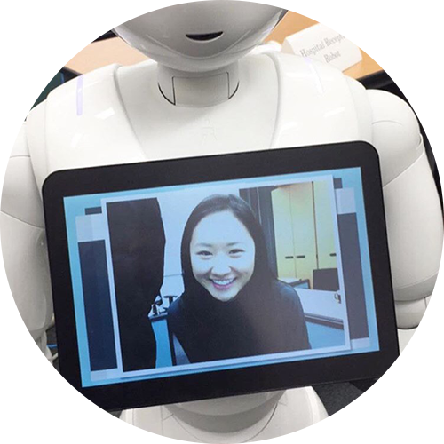

Srobot
Top
About
Projects
Publish
Contact
Sociable Robots
Robot, Augmented Humans and their Interection
member
kaz
高汐一紀
環境情報学部准教授

tisbee
樫井愛
環境情報学部 3年
tomato
上村朋子
総合政策学部 4年
viol
佐々木嘉子
環境情報学部 ３年
ak1ra
真島大樹
環境情報学部 ２年
nago
川那子進太郎
環境情報学部 ３年
ramp
宮本凜太郎
環境情報学部 ２年
theramin
堀江拓実
環境情報学部 ２年